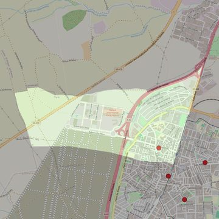

Santos Justo y Pastor
- Arciprestazgo
- Parla
- Población
- Parla
- Dirección postal
- c/ Fuenlabrada, 80
- Código postal
- 28981
- Extensión
- 2,89 km² (289 ha)
- Teléfono
- 916 055 802
- Correo electrónico
- info@santosjustoypastor.com
- Información demográfica
- De la parroquia · De la población (Parla) · Del arciprestazgo (Parla)


Descargar mapaLímites según decreto
" Partiendo del punto de intersección de la calle Real con la calle La Paloma, siguen por el eje de la calle Real y su prolongación hasta la autopista A-42 (en dirección noreste), por el eje de la autopista A-42 (en dirección noreste), por el límite de los términos municipales de Parla-Fuenlabrada (en dirección noroeste), por los límites de los términos municipales de Parla-Humanes de Madrid (en dirección sureste), por una línea recta imaginaria hasta la calle La Paloma (en dirección este), por el eje de la calle La Paloma (en dirección sureste) hasta la confluencia con la calle Real, punto de partida”. (Decreto de rectificación de límites, B.O., Junio-2007, pág.728)